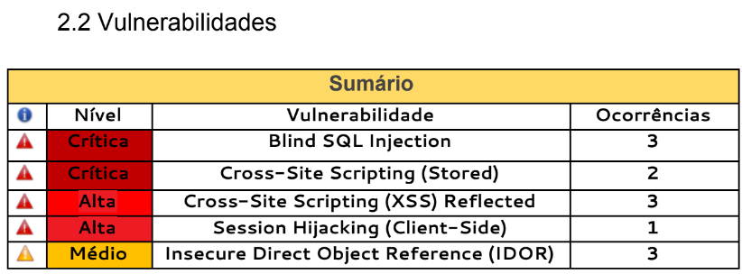

Hackeando Instituições de Ensino no Brasil
Olá, me chamo Vitor Fernandes a.k.a rapt00r, sou graduando em sistemas de informação pela UFPB e atualmente estou no 6º período do curso (01/2019). Faço parte de um grupo de estudos que criei com mais 3 amigos dentro da universidade, o EthicalHackers UFPB, discutimos temas sobre Ethical Hacking (really?? :O), Linux, Programação, Segurança da Informação e afins. O link para a página do grupo está no rodapé do blog, curte lá que ajuda bastante :)
Neste post irei falar um pouco sobre uma pesquisa pessoal que tinha como objetivo realizar testes de intrusão e documentar as vulnerabilidades encontradas no Sistema Integrado de Gestão de Atividades Acadêmicas (Sigaa) que é bastante utilizado em universidades públicas brasileiras (inclusive na minha). Esta pesquisa é de minha autoria, ou seja, não fui obrigado e nem muito menos pago para realizar os testes e documentar os resultados, tudo foi feito por livre e espontânea vontade e a documentação foi escrita com a ajuda de um professor da UFPB. Este post tem como objetivo falar sobre as vulnerabilidades encontradas, sendo bem objetivo para tornar a leitura menos cansativa. Os detalhes completos você pode encontrar no relatório que está disponível para download no final do post.
Bom de início, posso falar que o Sigaa é um sistema utilizado para o controle de atividades acadêmicas (ver notas, se cadastrar em disciplinas, em projetos, bolsas etc) por várias universidades e instituições públicas brasileiras. Procurei por quantas instituições utilizavam o sistema e encontrei um total de 42 instituições, compostas por institutos e universidades (podem haver mais) utilizando a dork: inurl:"sigaa/public/" e estão listadas abaixo:
UFC, UFRN, UFMA, UFERSA, UFPB, UFS, UNILA, CEFETMG, UFAL, UNIFAP, UFABC, UFRA, UNIR, UFOPA, IFC, UFPI, UFRR, UNIFEI, UEMA, UFPA, UFOB, IFPA, UFRB, UFG, IFRJ, UFLA, IFFARROUPILHA, UFSB, IFBAIANO, UNIFESSPA, UFRRJ, UFSJ, UNILAB, IFAM, UFCA, IFSC, IFSUDESTEMG, IFRS, ITVDS, IFPR, IFAC, IFAL
Qual o motivo de estar tornando este relatório público? É simples, a segurança da informação ainda não é tão importante no nosso país, e tive que realizar essa atitude (infelizmente) para que houvesse uma maior preocupação por parte dos desenvolvedores do sistema.
Quero deixar claro que meu objetivo não é denegrir a imagem de alguma instituição ou dos desenvolvedores, mas sim poder contribuir com a segurança do sistema bem como também contribuir para o cenário de Segurança da Informação no país. Espero que este post seja útil e que não haja consequências futuras.
Os desenvolvedores já foram avisados previamente das falhas e sobre a publicação do relatório. A seguir, uma breve timeline de como foi desde o início até agora:
05/2018 -> Comecei os testes no Sigaa da UFPB e encontrei boa parte das falhas.
12/07/2018 -> Documentei as falhas e o professor enviou o relatório completo para o STI (Equipe de TI da UFPB).
24/07/2018 -> Enviei um e-mail pedindo alguma atualização sobre a correção das falhas, mas não obtive nenhuma resposta.
30/07/2018 -> Percebi que apenas a falha de SQL Injection tinha sido corrigida, então enviei outro e-mail perguntando sobre a correção das outras vulnerabilidades.
30/07/2018 -> Recebi resposta do professor falando que as falhas fizeram muito ruído, e causou indisponibilidade do Sigaa. Também foi citada uma futura parceria com o STI e o Ethical Hackers.
12/11/2018 -> Enviei o relatório para a empresa desenvolvedora do Sigaa. Mas não obtive nenhuma resposta.
28/12/2018 -> Enviei um e-mail para o STI avisando sobre a notícia que saiu no G1 sobre o aluno que explorou uma das vulnerabilidades catalogadas no relatório.
28/12/2018 -> Enviei novamente o relatório para a empresa desenvolvedora do Sigaa, dessa vez obtive a resposta de confirmação.
04/01/2019 -> Enviei um e-mail para a empresa desenvolvedora do Sigaa e o professor para deixar claro os objetivos que foram passados ao entregar o relatório bem como um prazo de até o dia 31/01/2019 até que o relatório se tornasse público.
14/01/2019 -> Enviei um e-mail pedindo a versão do sistema para requisitar CVE's de algumas falhas. Sem resposta.
22/01/2019 -> Enviei um e-mail pedindo atualizações sobre a correção das vulnerabilidades. Sem resposta.
30/01/2019 -> Enviei um e-mail avisando que o tempo que dei para corrigir as vulnerabilidades acabou e irei publicar o relatório.
2019 -> Processos? Espero que não!
Agora é parte que interessa para todos (creio eu), quais as falhas encontradas, como consegui encontrar e etc. So, let's go!
As falhas encontradas no sigaa vão de nível médio ao crítico (me baseei na OWASP para catalogação do nível de criticidade das vulnerabilidades) e estão catalogadas da seguinte forma:

Como podem notar encontrei vulnerabilidades de SQL Injection, XSS (Self e Stored) e IDOR. Falarei agora um pouco mais sobre cada uma delas e quais as consequências que cada um trouxe dentro do sistema.
IDOR (Insecure Direct Object Reference)
Começarei pelas falhas de IDOR. Se você não conhece essa falha eu falarei um pouco mais sobre ela agora!
"Insecure Direct Object Reference (IDOR) ocorre quando um aplicativo expõe uma referência a um objeto de implementação interno. Usando esse caminho, ele revela o identificador real e o formato / padrão usado do elemento no lado de back-end de armazenamento."
Encontrei IDOR's em diferentes locais do sistema:
A primeira foi no sistema de email, onde eu conseguia ler todos os e-mails enviados no Sigaa. Percebi que ao fazer uma requisição para ler algum e-mail, era passado um parâmetro que continha uma referência para o e-mail. Ao fazer uma requisição alterando o valor desse parâmetro, o e-mail referente ao valor passado era aberto. O vídeo da PoC se encontra abaixo:
A segunda foi nos arquivos enviados pelos professores na disciplina, com esta falha eu conseguia baixar todos os arquivos que estavam armazenados no servidor, desde fotos de perfil até documentos de outros usuários e da própria universidade. Ao fazer uma requisição, era passado um parâmetro com um valor que identificava o documento, ao mudar este valor e enviar ao servidor o documento referente ao valor era retornado e baixado. O vídeo da PoC se encontra abaixo:
A terceira foi no acesso das turmas, onde eu conseguia APENAS acessar as turmas, não era possível fazer muita coisa de relevante. Ao fazer a requisição, um parâmetro contendo o ID da turma era passado, ao alterar este valor, a turma referente ao valor passado era acessada. Não gravei vídeo pois não achei muito relevante :)
XSS (Cross-Site Scripting)
Passando agora para as falhas de XSS (Cross-Site Scripting)Se você estuda Segurança da Informação, já deve ter ouvido nesse carinha :), mas se ainda não conhece deixarei uma pequena explicação sobre:
"Essa vulnerabilidade permite um usuário injetar códigos JS (JavaScript) maliciosos em determinado campo de texto de uma página e dependendo do seu tipo, esse código será mostrado para outros usuários."
Encontrei 3 Self-XSS e 2 Stored, cataloguei como reflected, mas foi errado, perdão pelo erro.
Self-XSS
Falando sobre os Self-XSS, eram basicamente em locais onde a entrada do usuário era refletida diretamente no código sem nenhum tipo de sanitização.O primeiro local que encontrei o Self-XSS foi na página de recuperação de login. Nessa página era pedido o e-mail do usuário no qual era refletido no código da página. Aqui era basicamente inserir um payload javascript qualquer que ele seria executado :)
O segundo local que encontrei foi na página de recuperação do código de confirmação e funciona da mesma forma que expliquei anteriormente.
O terceiro local foi na página de consulta da situação de determinado bolsista, nessa parte a única coisa que muda entre os exemplos anteriores é o campo, pois agora o payload javascript deve ser injetado no campo de matrícula.
XSS Stored
Em relação aos XSS Stored, um deles (XSS stored no fórum do curso) me permitia fazer o hijacking de sessão, ou seja, eu podia capturar a sessão de outros usuários, era necessário apenas que ele acessasse a postagem no fórum do curso.
O primeiro XSS Stored se encontra no sistema de e-mail (ele ataca novamente). Ao enviar uma mensagem com conteúdo javascript ele é interpretado e executado no browser do usuário receptor da mensagem.
O segundo estava no fórum do curso. Ao cadastrar um novo tópico no fórum com um título contendo o payload javascript, ao abrir-lo, o browser do usuário executaria o código contido no título do tópico. Esse XSS me permitia realizar o roubo de sessões de outros usuários. O vídeo da PoC se encontra abaixo:
SQL Injection
Agora pra fechar com chave de ouro, vamos falar sobre as falhas de SQL Injection!!Encontrei 3 falhas de SQL Injection, todas via POST.
Abordarei apenas sobre 1 delas para que o post não fique mais longo. As outras você encontra no relatório :)
Se você ainda não conhece o que é SQL Injection, aqui está um breve comentário sobre:
"Um ataque de injeção SQL consiste em inserção ou "injeção" de uma consulta SQL por meio dos dados de entrada do cliente para o aplicativo. Uma exploração de injeção SQL bem-sucedida pode ler dados confidenciais do banco de dados, modificar dados do banco de dados (Inserir / Atualizar / Excluir), executar operações de administração no banco de dados (como desligar o DBMS), recuperar o conteúdo de um determinado arquivo presente no arquivo DBMS sistema e, em alguns casos, emitir comandos para o sistema operacional. Ataques de injeção SQL são um tipo de ataque de injeção, no qual comandos SQL são injetados na entrada do plano de dados para efetuar a execução de comandos SQL predefinidos."
Para encontrar essa falha, eu naveguei até a página de busca por docentes e decidi injetar um simples '; no campo dos docentes e recebi uma mensagem de erro interno com uma página personalizada. Decidi tentar vários ataques para vários DBMS, foi então que consegui que o servidor "dormisse" por um tempo utilizando o payload: rapt00r’; SELECT PG_SLEEP(5)--+-
Foi então que vi que realmente estava vulnerável, então decidi capturar a requisição e utilizei a ferramenta para testar se realmente estava vulnerável, e booommm!!!! Tive acesso ao banco de dados da UFPB. Infelizmente não consegui capturar imagens do banco de dados da UFPB, mas utilizei a UFC como alvo para o vídeo da PoC, que pode ser encontrado abaixo:
Bom pessoal, é isso. Espero que este relatório possa ajudar todos aqueles que gostam da área de Segurança da Informação. Espero que possa servir como base para trabalhos futuros e que possa ser utilizado para aprendizado. Irei utilizar as falhas mais graves para tentar ganhar algumas CVE's e poder concretizar ainda mais minha pesquisa.
Lembre-se seja ético, tenha princípios.
Para finalizar quero deixar claro que nenhum dado foi vazado ou repassado para outras pessoas e o relatório está disponível apenas a partir da data de hoje (31/01/2019).
Como prometido, o relatório poderá ser baixado através do link: Sigaa - Relatório Completo